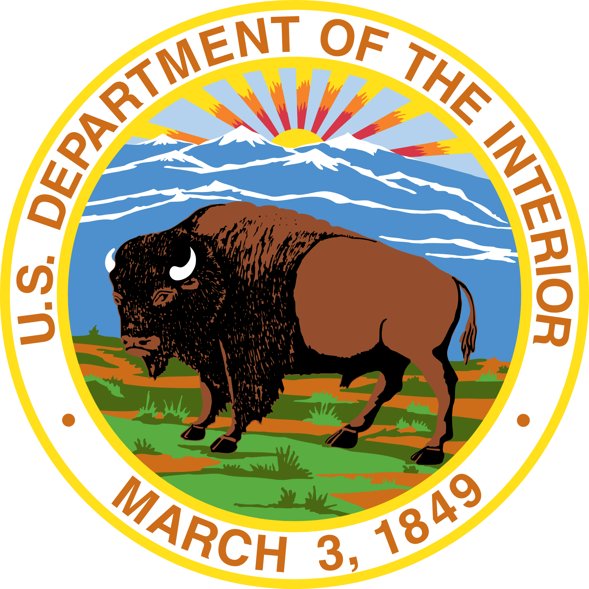
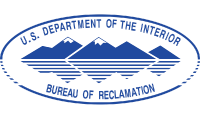
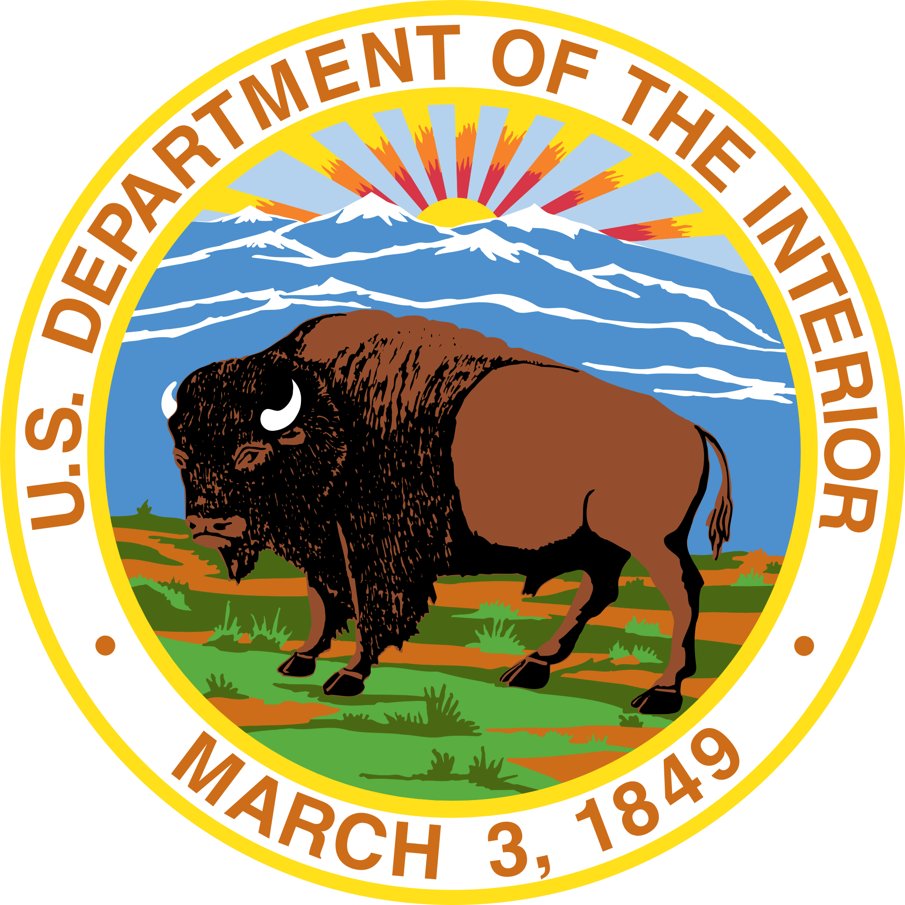
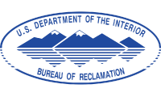

Visit Arches and discover a landscape of contrasting colors, landforms and textures unlike any other in the world. The park has over 2,000 natural stone arches, in addition to hundreds of soaring pinnacles, massive fins and giant balanced rocks. This red rock wonderland will amaze you with its formations, refresh you with its trails, and inspire you with its sunsets.
x


 


